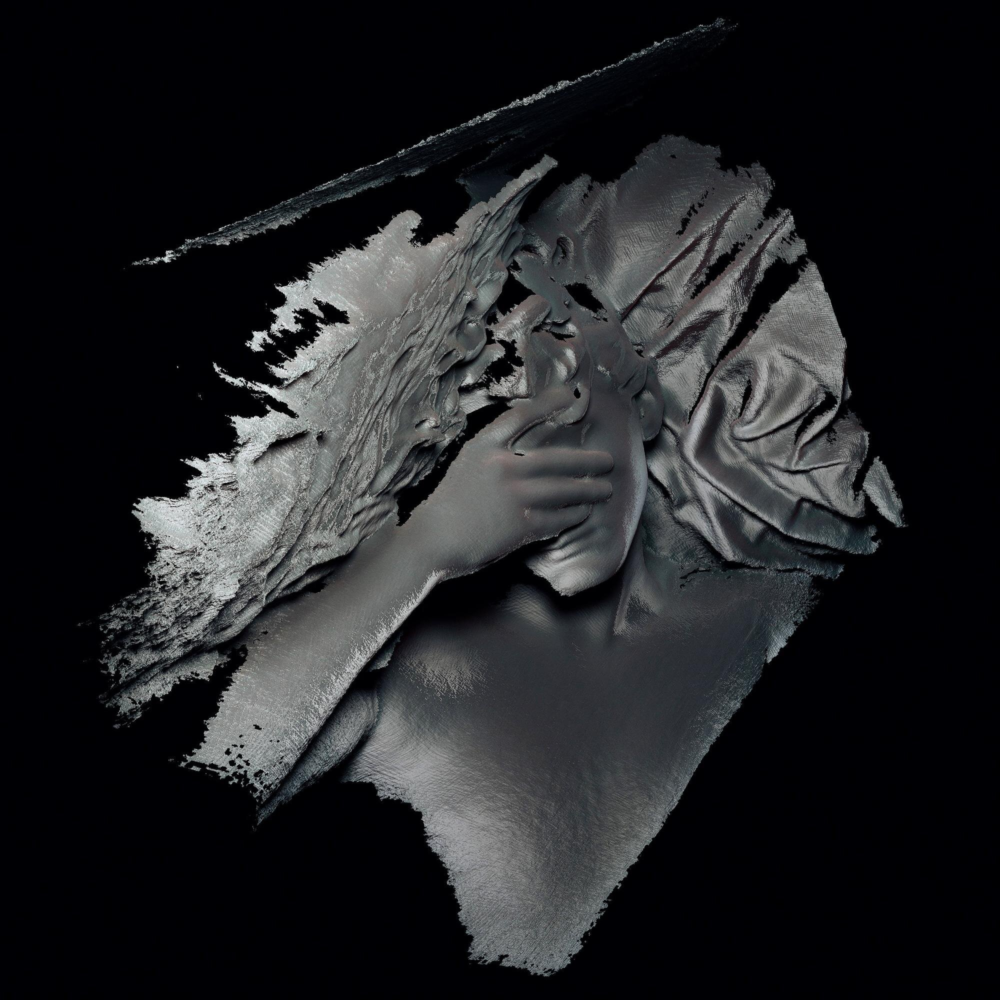
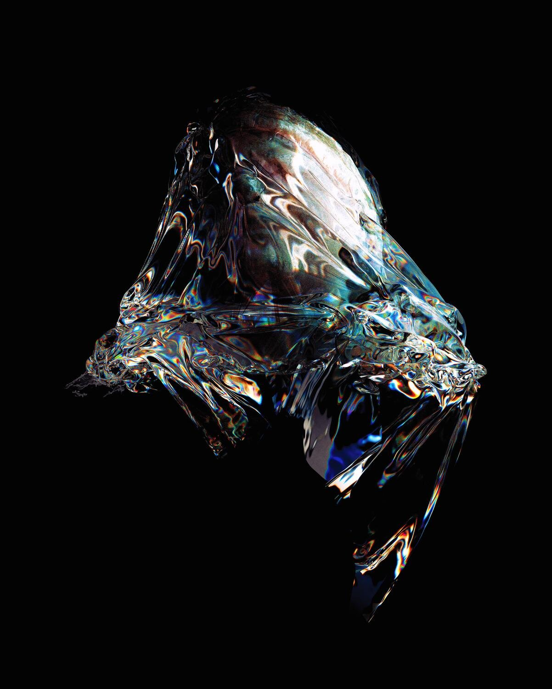

❮
❯

Collated Frames is a typographic project focused on reinterpreting the lowercase 'k' through a blend of historical context and digital abstraction. The exploration began by tracing the letterform's origins to the outstretched palm of the hand—a gesture embedded in human expression and communication. Building on this symbolic foundation, the project investigated the intersections of digital media and typography, revealing how technology can capture and transform human gestures into visual language.
Using point cloud mapping, a technique that allows the creation of intricate 3D models, various forms of the hand were mapped, broken down, and reconfigured into fragmented, ethereal shapes. These digital hand models—partially deconstructed and hovering between reality and abstraction—became symbolic representations of the typographic gesture, each frame capturing the essence of motion and human presence in a digital realm.
The results culminated in a moving image piece, where these frames of the hand's evolving forms flow and shift, transforming the letter 'k' into a dynamic expression of both physical and digital language. This piece was displayed as part of the xHeight typographic installation at Twentysix Gallery in Newtown, Wellington, allowing viewers to experience the fusion of traditional and digital typographic art through a visually compelling, immersive installation.
The work came out of an exploration of the letter form of 'k' and how this form origantes from the outreached hand. I was taken aback by the simplicity that typography had transformed this gesture into a symbol of communication.
I wanted to explore this idea of the hand as a symbol of communication and how this gesture can be translated into a visual language. I had also simultaneously been interested in the limitations of language as a form of communication. Especially within the digital age.
I had explored how the FaceID on Apple devices has a way of interpreting the human face as a language, and how this can be used to unlock devices. I wanted to explore how this technology could be used to unlock a new language of the hand.
I used 3D point cloud mapping to create a series of hand models that were then deconstructed and reconfigured into fragmented, ethereal shapes. These digital hand models became symbolic representations of the typographic gesture, each frame capturing the essence of motion and human presence in a digital realm whilst being eeriely lost and distored.
An example of the limitations of communication and language
